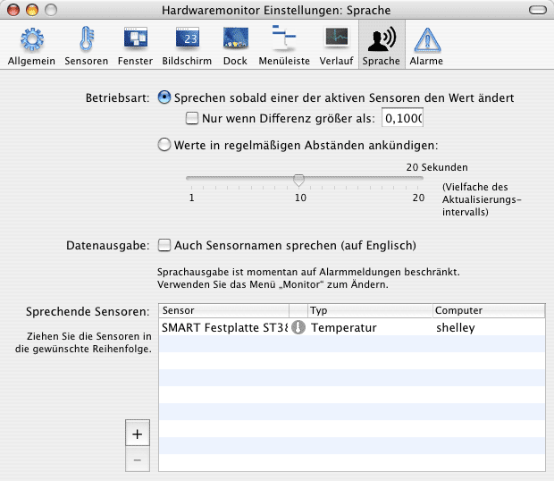

Mit der Sprachausgabe arbeiten |
Das Monitorprogramm kann auf Wunsch Sensordaten auch akustisch, per Sprachausgabe, melden. Hierbei kann zwischen zwei verschiedenen Betriebsarten gewählt werden:
In beiden Fällen liest die Sprachausgabe alle Sensorwerte vor, die als sprechend konfiguriert sind. Die Auswahl erfolgt mit dem Punkt Betriebsart in der Rubrik Sprache des Einstellungsfensters. Durch Ankreuzen des Feldes Sensornamen sprechen werden neben den Messdaten auch die englischen Sensorbezeichnungen genannt, wie Sie sie in der Rubrik Sensoren definiert haben.

Mac OS X unterstützt momentan nur englische Sprachausgabe, egal welche Sprache Sie in Systemeinstellungen als Präferenz angegeben haben. Die Messwerte werden grundsätzlich ohne Einheiten genannt. Stimme und sonstige Charakteristik der Sprachausgabe können Sie mit dem Punkt Sprache in Systemeinstellungen steuern.
Um festzulegen, welche Sensoren gesprochen werden sollen, verwenden Sie die Tabelle in der unteren Hälfte des Fensters. Sie wird bedient, wie bereits obenstehend beschrieben.
Sie sollten es vermeiden, das Zeitintervall für Sprachausgabe zu kurz oder die Anzahl der sprechenden Sensoren zu hoch einzustellen. In diesen Fällen könnte die nächste Sprachausgabe bereits beginnen, während die laufende Ausgabe noch nicht beendet ist. Die Sprachfunktion unterbricht sich hierdurch ständig selbst und Sie werden nichts verstehen.
Sie können die Sprachausgabe bei Bedarf vollständig ein- und ausschalten, ohne Einzeleinstellungen ändern zu müssen. Beim ersten Start des Monitorprogramms ist die Sprachausgabe standardmäßig abgeschaltet. Die Einstellung der Betriebsart erfolgt im Menü Monitor: